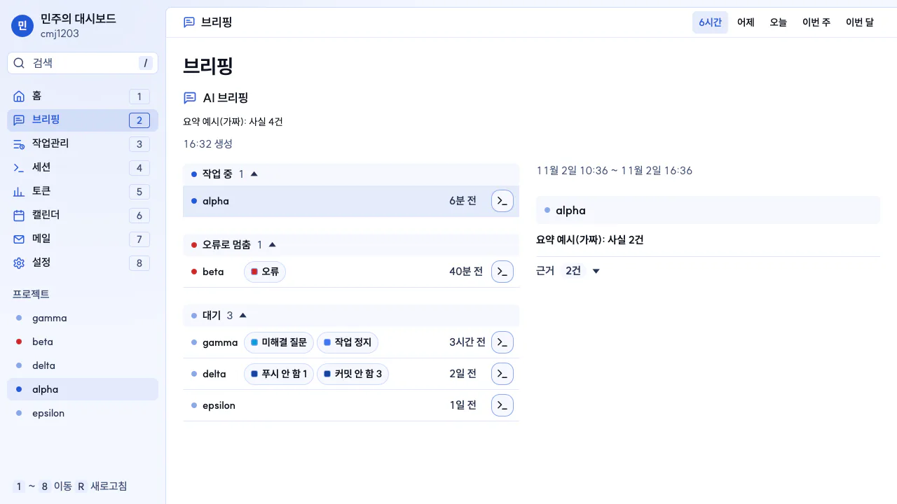
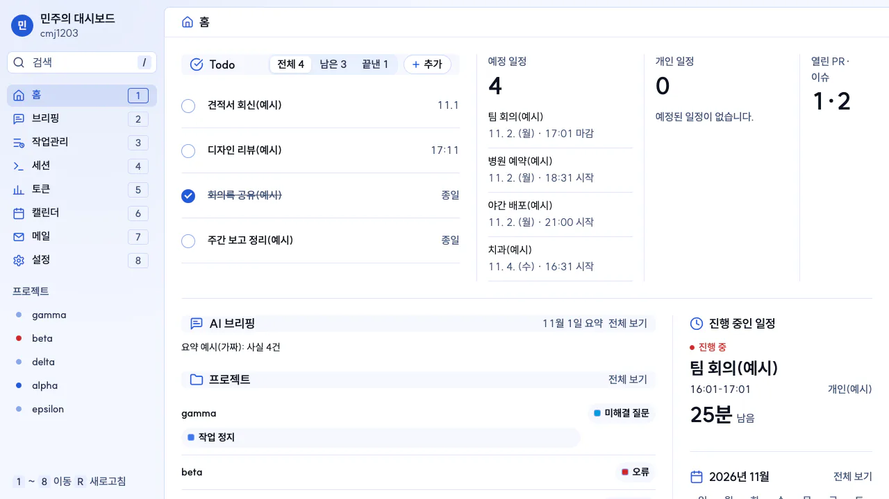
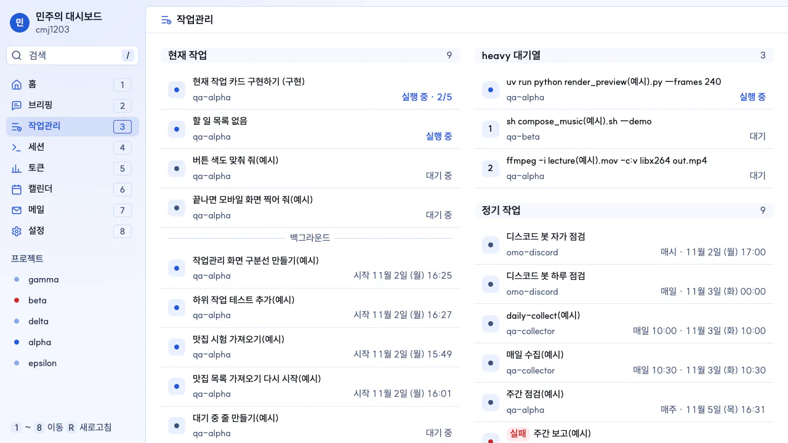
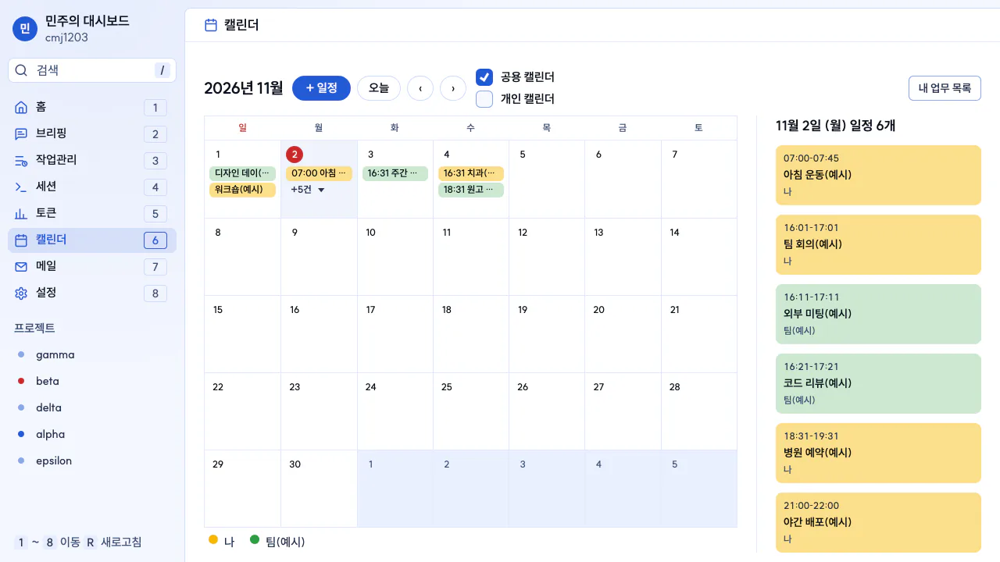
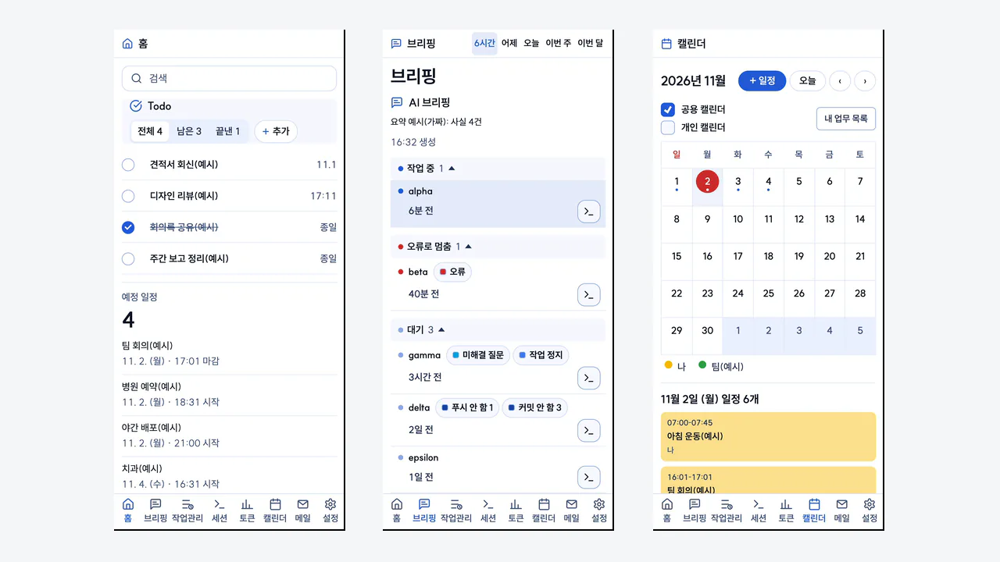

브리핑
프로젝트마다 작업 중·오류로 멈춤·대기·커밋 안 함 같은 상태와 AI 요약을 봅니다.
일정·할 일·메일과 AI 코딩 세션 상태를 한 화면에서 보는 업무용 웹앱입니다. 맥에서 켜 두고 휴대폰에서도 엽니다.


프로젝트마다 작업 중·오류로 멈춤·대기·커밋 안 함 같은 상태와 AI 요약을 봅니다.

AI 세션이 지금 하는 일과 하위 작업, heavy 대기열, 정기 작업을 봅니다.

구글 캘린더의 공용·개인 일정과 내 업무를 한 달 달력에 같이 보여 줍니다.

Tailscale로 휴대폰에서도 같은 화면을 열고, 홈 화면에 설치하면 알림을 받습니다.